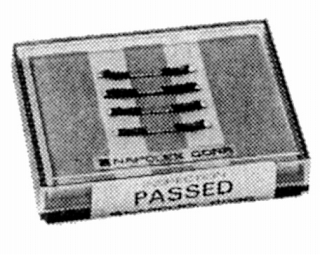

NAPOLEX (ナポレックス)
1970年創設のヘッドフォンを中心としたオーディオメーカー。創設当時はヘッドフォンの他に当時流行の４チャンネルステレオアダプターなどを発売しており、またその後は通常のスピーカーにも挑戦した。コンデンサー型スピーカーの開発も公表していたが実際の製品までいったのかは不明である。1980年には創業者が会社を売却し、以降オーディオ業界からは完全に姿を消している。
ヘッドフォンをメインとした非常に珍しい企業であり、活動期間も10年程と短く、アナログ関連製品についてはほとんど記録を見つけられない。唯一の例外はブランド末期に純銀線による高級ヘッドフォンやケーブルを発売した際に、発表していたリードワイヤーだ。実際発売されたかどうかは確証がなかったが、先日オークションに現物が出品されていた。
リード線
GR-240

■価格 1,700円（4本1組）
■備考 純銀（純度99.99%）リッツ線
50μ径の銀線を一本一本ポリウレタンで絶縁し、
240本より合わせたリッツ線。
1979年当時で\78,000だった純銀線コードのヘッドフォンX-01と同時期の製品。
当時の製品には\22,000のピンケーブルAG-1512-P10や、
1mあたり\9,000の切り売りケーブルがあった。